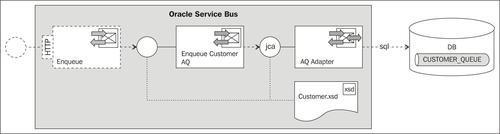
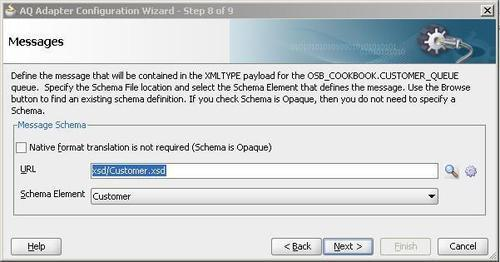
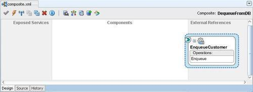
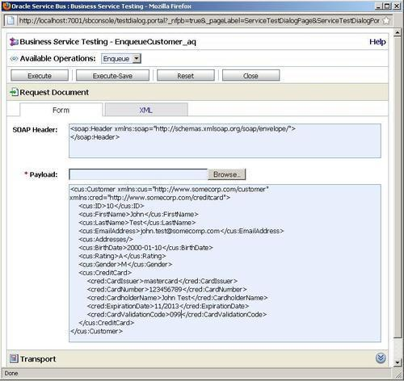
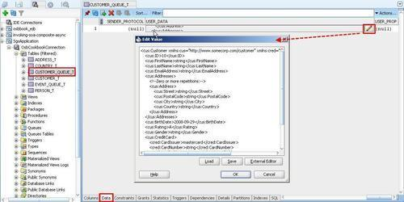
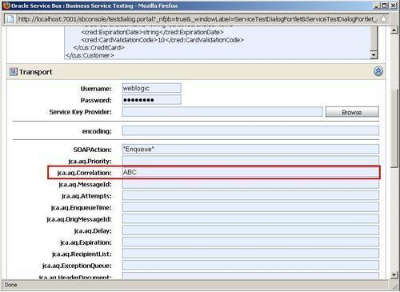
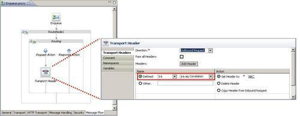

In this recipe, we will configure an outbound AQ adapter, so that it can be used to publish messages from the Oracle Service Bus to an Oracle AQ queue on the database:

The AQ database queue CUSTOMER_QUEUE, which we will use has been set up with the OSB Cookbook standard environment using the following SQL and PL/SQL code:
BEGIN sys.dbms_aqadm.create_queue_table( queue_table => 'CUSTOMER_QUEUE_T', queue_payload_type => 'SYS.XMLTYPE', storage_clause => 'PCTFREE 10 PCTUSED 40 INITRANS 1 MAXTRANS 255', sort_list => 'ENQ_TIME', compatible => '8.1.3'); END; / BEGIN sys.dbms_aqadm.create_queue( queue_name => 'CUSTOMER_QUEUE', queue_table => 'CUSTOMER_QUEUE_T', queue_type => sys.dbms_aqadm.normal_queue, max_retries => 5, retry_delay => 0); sys.dbms_aqadm.start_queue( queue_name => 'CUSTOMER_QUEUE', enqueue => TRUE, dequeue => TRUE); END;
For this recipe, we will use the database queue CUSTOMER_QUEUE available with the OSB Cookbook standard environment. Make sure that the connection factory is set up in the database adapter configuration, as shown in the Introduction of this chapter.
You can import the OSB project containing the base setup for this recipe into Eclipse from \chapter-7\getting-ready\using-aq-adapter-to-enqueue-to-db.
First we create the AQ adapter, which will implement the enqueue functionality to the database. In JDeveloper perform the following steps:
composite.xml of the project EnqueueToDB. EnqueueCustomer in the Service Name field and click on Next. Enqueue for the Operation Name field.

The definition of the AQ adapter for publishing messages to the CUSTOMER_QUEUE database queue is now ready. The work in JDeveloper is done and we can switch to Eclipse OEPE and perform the following steps to create a business service using the AQ adapter:
adapter/EnqueueCustomer_ac.jca file and select Oracle Service Bus | Generate Service from the context menu. business folder for the location of the business service.We now have a business service that allows the Oracle Service Bus to use the AQ adapter through the JCA transport. The interface of the business service is defined by the EnqueueCustomer_aq WSDL, which imports and uses the EnqueueCustomer WSDL generated by the AQ adapter. We could now create a proxy service, which allows us to send a Customer message over a common protocol, such as SOAP/HTTP. However, in this recipe we will just focus on testing the OSB to AQ communication.
In the Service Bus Console perform the following steps:

USER_DATA column and click on the Edit Value button to see the complete text of the message.
Using the AQ adapter allows us to expose Oracle AQ queues to the Oracle Service Bus.
In practice, we would invoke the business service from within a proxy service, either in a Routing or Publish action. The proxy service would then expose any other transport, for example, a WSDL Web Service, to offer the publishing a message to an AQ queue through a SOAP-based Web Service.
The queue table message has a column called CORRID that can store a correlation identifier. This is very helpful if you need to provide message tracking over multiple transactions.
The value can either be hard coded when configuring the adapter or passed dynamically when invoking the business service. When testing the business service through the test console, the value can be specified through the property in the Transport section

To pass a correlation identifier from a proxy service, the Transport Header action should be used within a Routing or Publish action, as shown in the following screenshot:
